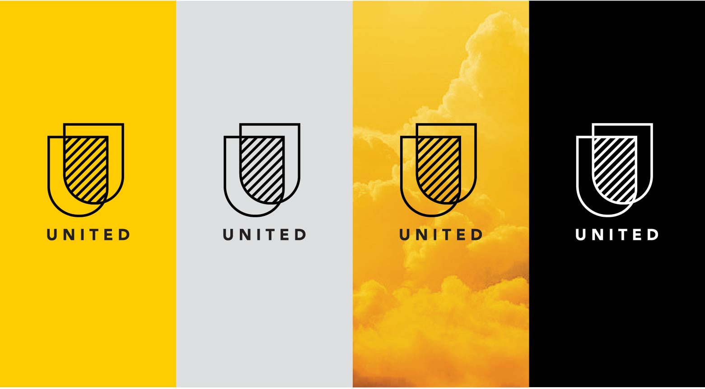
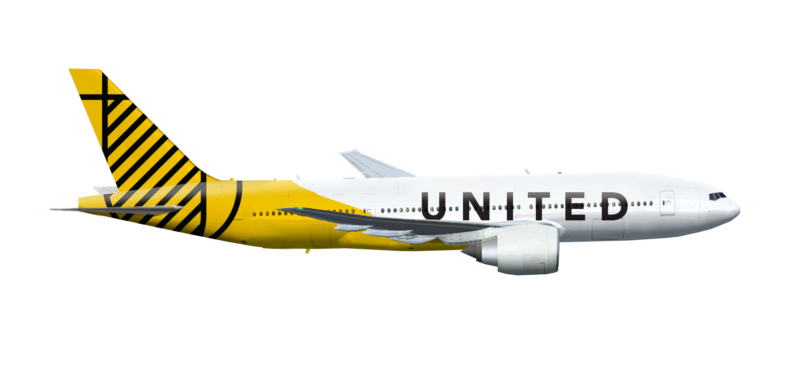
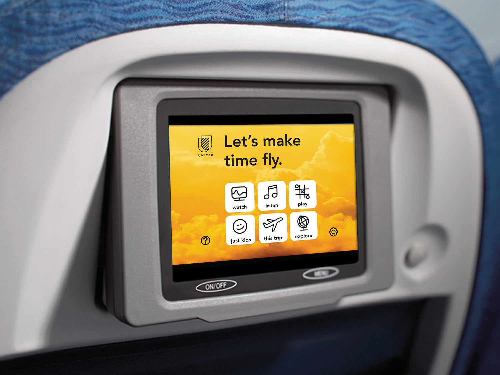
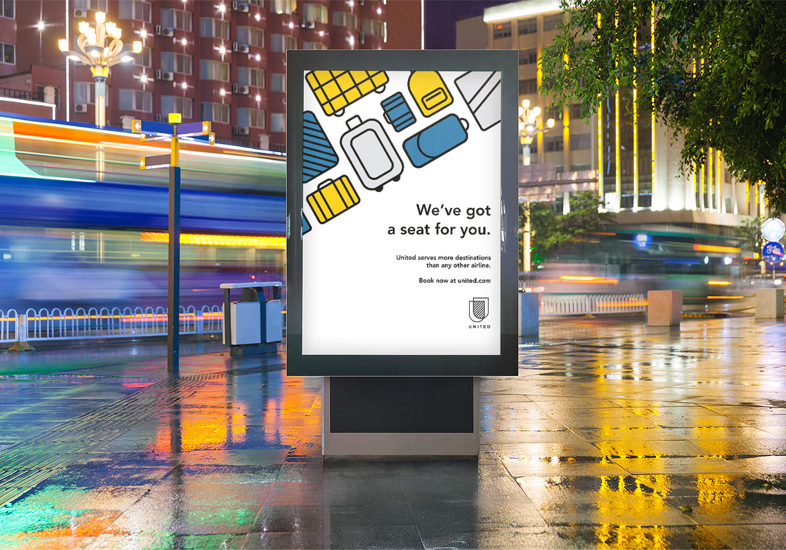
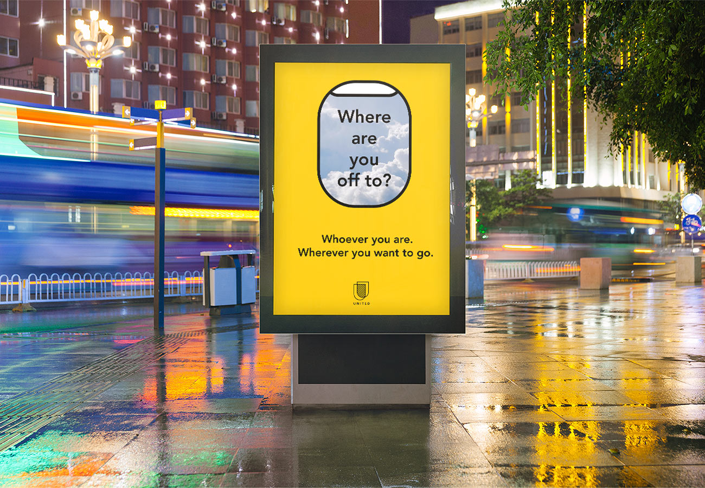
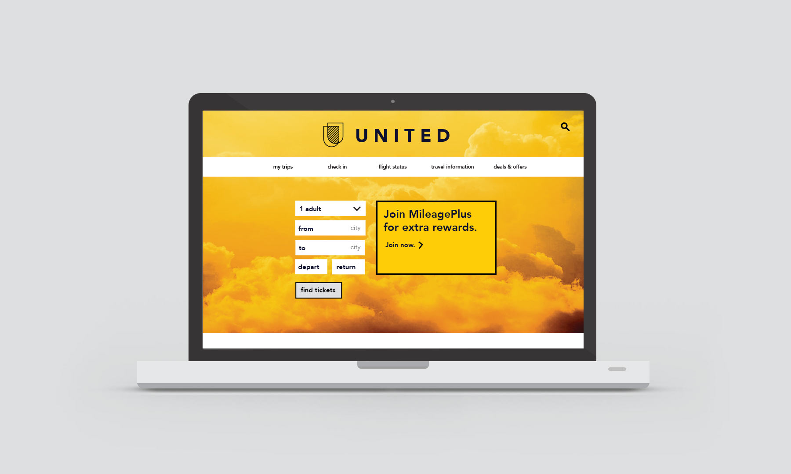
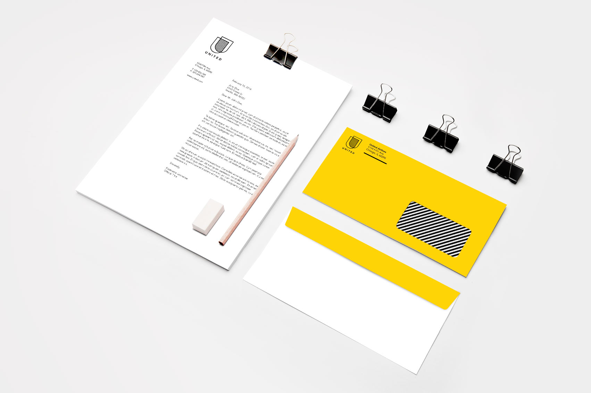
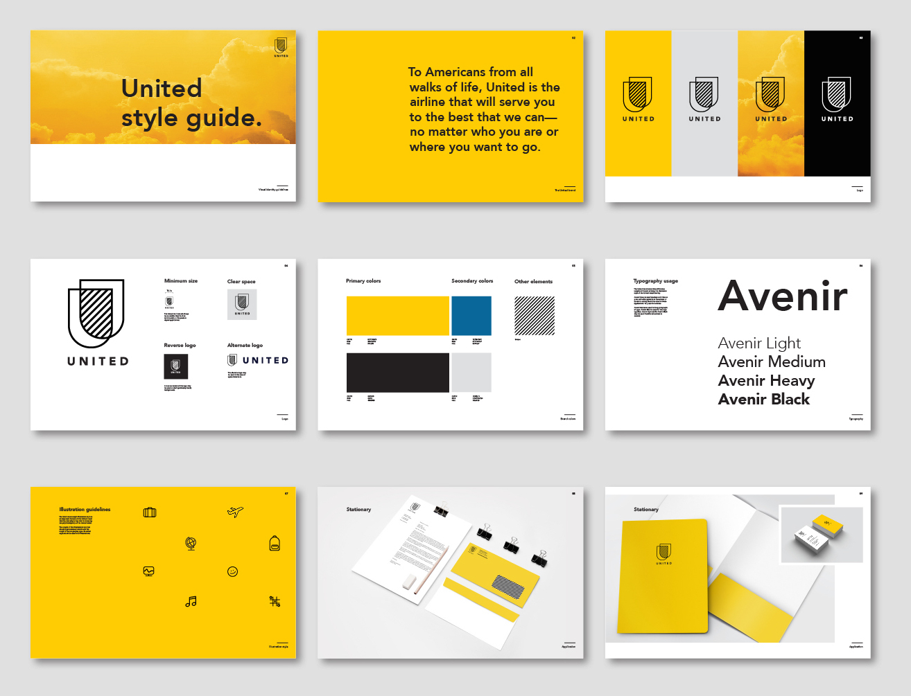

While airports are filled with security screenings and passport checks, I re-imagined United as an airline that appreciates each of their passengers as unique individuals with unique stories. I framed this redesign of the United visual identity around the ideas of acceptance and friendliness.
I developed this visual identity system over the course of 7 weeks, from surveying the positions of competition brands to developing a moodboard to developing and iterating on each piece of collateral. I created a style guide booklet to complete the project.
Date — Winter 2016
Class — Corporate Identies
Instructor — Ben Graham (Turnstyle)







